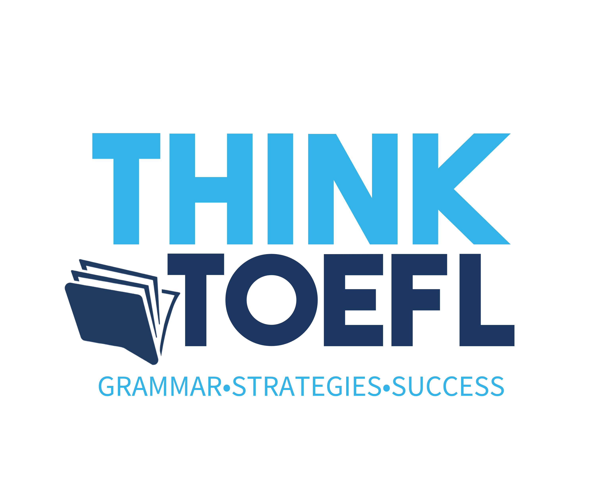

Language Structure
Lee con atención las instrucciones y los ejemplos antes de comenzar.
Las opciones de esta parte son frases incompletas. Después de cada una de estas frases, hay cuatro palabras o expresiones. Debes seleccionar la palabra o expresión —(A), (B), (C) o (D)— que mejor complete la frase.
Pepsin ________ an enzyme used in digestion.
________ large natural lakes are found in the state of South Carolina.
En esta parte, cada oración tiene cuatro palabras o expresiones subrayadas y marcadas con (A), (B), (C) y (D). Debes identificar cuál de las cuatro partes subrayadas contiene un error gramatical que debería corregirse.
The Wright brothers was (A) the first people to achieve (B) controlled, powered flight in (C) a heavier-than-air machine (D) .
Although the museum's collection is (A) relatively small, it contain (B) several extremely (C) valuable works of art (D) .